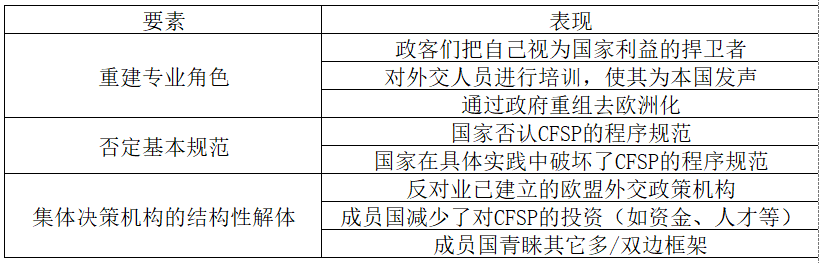

收录于合集 #理论研究 96个

作品简介
作者： Patrick Müller，维也纳大学政治科学研究所欧洲一体化研究中心教授。Karolina Pomorska，莱顿大学政治学研究所国际关系副教授，剑桥大学政治与国际研究学系欧洲中心副研究员。Ben Tonra，都柏林大学政治与国际关系学院国际关系教授。
编译： 董诗（国政学人编译员，吉林大学行政学院）
来源： Patrick Müller, Karolina Pomorska & Ben Tonra (2021) The Domestic Challenge to EU Foreign Policy-Making: From Europeanisation to de- Europeanisation? Journal of European Integration , 43:5, 519-534, DOI: 10.1080/07036337.2021.1927015.
归档： 《国际关系前沿》2021年第9期，总第36期。
内容提要
在文章中，作者提出了“去欧洲化”这一新概念，并提出相关理论框架来分析欧盟进行外交决策时的内外部挑战。在作者看来，去欧洲化的表现形式有：欧盟外交决策与某些成员国所宣称的价值观和利益背道而驰；成员国不太愿意参与制定欧盟层面的集体外交政策，而优先考虑其它双/多边框架或（单边）国家行动；欧盟外交政策有时会受到成员国的明显破坏等等。去欧洲化和简单的政策争论不同，前者范围更广，影响更为剧烈。同时，欧洲化与去欧洲化是一个镜子的两面，通过界定和梳理欧洲化的概念，能够帮助读者们更好地理解去欧洲化的含义。
文章导读
欧盟的共同外交和安全政策（CFSP）面临着来自内外部的双重挑战。就外部挑战而言，美国外交政策发生的转变（在特朗普执政时期尤为明显），中国的迅速崛起，俄罗斯立场的愈发强硬，以及地缘政治环境的日益碎片化等等，都对欧盟造成了挑战。就内部挑战而言，民粹主义的兴起、一些中东欧成员国的民主衰退（democratic regression）、08年金融危机的负面影响、危机后的紧缩政治，以及合法性危机等等，也对欧盟带来了不利影响。尤其是近两年，新冠肺炎疫情以及随之而来的经济萧条对欧盟造成了巨大冲击。由此可见，随着越来越多实质性问题的浮现，如何分析欧盟的外交决策成为了具有重要意义的问题。
作者认为，在有关国家和欧盟层面外交政策的联系的研究中，多数侧重于（探讨）在共同外交与安全政策框架内的深化机构合作和共同体建设，或者欧盟成员国外交政策的欧洲化等等。反之，学界较少研究可能侵蚀过往“欧洲化”成果的力量，它们可能会损害欧盟外交政策的凝聚力及其应对外部环境变化的制度能力。在作者眼中，“去欧洲化”主要表现在以下几个方面：欧盟外交决策可能与某些成员国的价值观和利益背道而驰；成员对于在欧盟框架下制定集体外交政策的意愿不高；决策出台后可能遭到欧盟成员某些行为的破坏等等。
01
去欧洲化的概念：欧洲化的镜像
通常，欧盟外交政策的欧洲化包括三个政策动向：上传（uploading）、下达（downloading）和交叉传达（cross- loading）。“上传”着眼于国家如何、何时以及在多大程度上将本国外交政策目标提升到欧盟政策的制定中，从而增加该国政策偏好的权重。“下达”是将集体商定的欧盟外交政策立场嵌入到各国外交政策中，同时影响这些国家政策的变迁。“交叉传达”则注重成员国如何在欧盟机构之外的合作中相互学习，并在相同的制度规范中社会化。总的来说，“欧洲化”意为 “ 国家外交政策制定方式、专业角色的界定和政策执行方式发生转变，以及由此产生的对由欧盟集体政策中产生的规范和期望的内化 ” 。
**去欧洲化则描述了一个当今事实，即欧盟的外交决策与某些成员国宣布的价值观和利益背道而驰；成员国不太愿意参与集体决策；决策结果有时会受到成员国某些行为的破坏，比如定期甚至系统地使用或威胁使用否决权等 等。**需要注意的是，去欧洲化不能被定义为政策分歧、政策限制和政策失败等等。在作者看来，那些受制于民粹主义、本土主义和半极权政治下的成员国会对现有欧盟外交政策的立场和执行构成挑战。此外，一些欧盟国家的领导人和欧洲经济区官员也指出后里斯本制度改革的原因，即成员国在外交理事会及其相关机构中失去轮值主席国地位，成员国参与的积极性较低，以及集体外交精神的缺失等等。当然，这些问题都是在欧盟委员会谈判期间发生的正常的政策争议。而对于某些问题，比如欧盟在中东所持和平立场而遭受到的挑战，对俄罗斯进行制裁与建设性接触之间搞平衡，以及重新审视全球治理中的中美两国权力分布等等，都必须在外交政策变化和调整的合法范围内。长期以来，委员会决策层认为，尽管有时欧盟某成员国出于国家利益而违背欧盟的集体立场，但这一行为是可以理解的，而且对于其他国家来说，也有必要了解反对国的行为动机。因此，政策争议和去欧洲化不能等同。
02
去欧洲化的判别标准
如何区分简单的政策争论和明显的去欧洲化，作者提出了三个标准。 首先是对外交政策的挑战的范围和话语语调 （discursive tone of the challenge）。如果成员国在欧洲基本规范内挑战既定的政策立场或原则，那么即为简单的政策争论。例如，如果有人认为既定的欧盟政策立场赋予了不公正行为者特权，或者无法维护冲突中特定行为者的权利，那么可以在合法的政策争论下得以解决。如果有成员国对支撑欧盟外交政策的核心基本准则造成了明显的冲击，例如为严重侵犯人权的行为进行辩解、违反国际法或破坏多边机制等等，那么则认为成员国在有关问题上采取了不同于欧盟的国家政策。违背核心程序规范——如信息共享、寻求共识、尊重既定欧盟外交政策立场等也同样如此，它们也属于“共同外交政策”的合作文化。尽管对于欧盟来说，艰难的讨价还价行为和成员国偶尔无视这些程序规范等现象是其正常政治争论的一部分，但是出现彻底反对欧盟合作文化的情况将可能导致去欧洲化的出现。
其次是对外交政策构成挑战的规模 。 在面临一些主要的政策分歧时，各成员国的政治意识形态显然转变成了不同的外交政策视角，但是简单的政治争论可以解决分歧。然而当争论比比皆是时，这就不再是政见分歧了，而是成员国外交政策更深刻的去欧洲化。这样一种大范围的挑战意味着成员国将在根本上重新定位欧盟，远离欧洲规范及其相关的欧洲化。
再次是成员国与欧盟共同政策立场相对立 。 欧盟的外交政策有特定的立场，每一份精心编制的共同声明都包含一系列国家政策立场和偏好。每一个声明、每一个立场以及每一个长期的政策取向本身都是妥协的产物。因此，去欧洲化意味着相关成员国始终将自己定位在现有成员国立场范围之外。
03
去欧洲化的三个要素
去欧洲化的出现必须有赖于一定程度的欧洲化。因此作者通过欧洲化所带来的重大成就来衡量去欧洲化的程度。
第一个要素是在国内规范层面“重建专业角色” （reconstruction of professional roles），涉及实质性外交政策以及体制和程序等方面的去欧洲化。欧洲化使欧洲政治议程日益突出，并以共同的欧洲标准定义国家角色和优先事项，而不是依据狭隘的国家标准。这对于较小的欧盟成员国具有深远意义。这些国家的外交政策曾经较为受限，如今却可以借助欧盟参与议题更为广泛的外交。相反，去欧洲化指的是成员国从先前确立的欧洲共识、角色和优先事项中撤退的状态。在制定外交政策时，国家更为关注本国的利益，质疑或反对欧洲共同的优先事项、利益和立场。这种对欧盟共同外交政策的反对不仅源自制定外交政策时的影响因素，也受到国内观众的引导。在实质性外交政策立场的层面，成员国外交政策目标可能会发生转向，即从欧盟退回到国家。此外，专业角色的解构也可能与成员国国内制定外交政策的官僚机构有关。成员国为了重新获得在欧洲化外交政策下的自主权，可能会积极抵制精英社会化进程，并不愿意赋予欧盟更多的权力。
第二个要素是“否定基本规范” （Repudiation of fundamental norms）。“去欧洲化”意味着构成欧盟基础的价值观和规范的退化。几十年来的制度建设、欧盟层面的合作和精英社会化造就了独特的欧盟外交政策体系。它赋予了欧盟独特的外交政策身份，遵循着人权、法治和民主等规范，并孕育了欧洲国家的共有目标、观念性承诺以及“合作文化”。在共同外交政策制度发展的背景下，外交政策欧洲化的关键特征是，理事会及其各工作组和委员会基于程序规范（如“信息共享”、“协商”、“寻求共识”、“妥协”）的合作文化不断发展，并尊重之前商定的外交政策立场。欧盟的外交政策也基于实质性规范，如尊重民主和法治、尊重普遍人权、尊重多边主义和全球治理机制等。去欧洲化与之相对应，它并不意味着成员国对于规范偶尔的破坏，而是持续稳定地反对在本国外交政策中业已确立的共同外交与安全政策规范。因此，去欧洲化可能会破坏欧盟的“合作文化”及其寻求共识和达成妥协的能力。
第三个要素是“集体决策机构的结构性解体” （the structural disintegration of collective policy- making institutions）。去欧洲化促使成员国“脱离（disengagement）”欧盟层面的外交决策或“规避（circumvent）”欧盟外交政策机构，使得欧盟外交政策构架失去意义，导致结构性解体。“脱离”与成员国对“共同外交政策”中领导权、外交支持和资源等方面的积极承诺相关。这种承诺以“欧洲化”的概念为基础，即成员国对欧盟议程的重视应与日俱增，并且应积极影响并促进欧盟外交政策的发展。“脱离”意味着成员国对欧盟外交政策的支持、处理涉及共同外交的具体问题时愿意投入的时间、人员和资源都越来越少，在外交决策各阶段的参与度也逐渐降低。“规避”意味着成员国在可能越来越多地将自己的承诺和忠诚赋予其他多边、少边（mini- lateral）和双边框架。例如，北约在成员资格、授权和资源方面与欧盟共同安全与防务政策有着显著的重叠，并且已经影响了后者的发展。一些国家还保持着强大的双边关系，与中国（如“17+1”框架）等实力强大的经济行为体的关系也越来越密切。相较于在欧盟层面达成合作，欧洲国家更愿意与这些强大经济体开展双边关系。
因此，三个要素之间的关系是：（国内层面） 专业规范（professional norms）的重建，以及（欧盟层面）基础规范——包括程序和实质规范遭遇的持续挑战，将最终导致结构性解体 。
表1：去欧洲化的三个要素及其表现

04
去欧洲化的内外驱动力
外交是内政的延续。当政府改组后，或者国内利益集团和反对派提出新的要求时，国家则会根据国内的现状适时调整外交政策。同样，一些欧盟成员国右翼民族主义、民粹主义和疑欧主义的兴起可能改变欧盟内部政治格局。而英国脱欧就是其外交政策彻底去欧洲化的表现，但这也推动了其他欧盟国家的合作。例如，在英国2016年公投结果公布后的几个月内，欧盟自身就开始大幅推进安全和防务政策合作。
在多层次的欧盟治理体系中，成员国外交政策的变化不仅有国内因素，也有欧盟这一外部因素，即欧盟成员国以多种方式参与欧盟治理体系并受其影响。例如，在处理2008年金融危机、2015年移民问题和新冠肺炎疫情等重大事件时，欧盟成员国在制定对外政策上明显缺乏团结性和一致性。此外，欧盟在制定外交政策时一直与“多样性逻辑”（logic of diversity）作斗争。“多样性逻辑”认为，鉴于成员国受制于不同的地理位置、历史、文化和外交政策传统等因素，外部环境的改变和施压往往会使国家反应各异。例如，有些国家把双边关系置于优先地位（尤其是在面对美国、俄罗斯和中国等大国时），而非借助欧盟的多边框架，这将为欧盟共同立场带来挑战。
05
结论
去欧洲化需要一定的范围和规模，然而这并不意味着去欧洲化是全面统一的过程，即影响到一个成员国外交政策的各个方面，或者普遍影响到所有成员国。其次，去欧洲化包括“口头上”和“实际上”两方面。当成员国公开质疑欧盟外交政策的合法性，批评欧盟的基本价值观，甚至呼吁裁减共同外交与安全政策机构，但并没有真正推动外交政策脱离欧盟时，去欧洲化很大程度上是成员国摆出的“姿态”而已。相反，当成员国违反欧盟基本原则，回避欧洲化的外交政策问题或规避欧盟机构时，则表明该国已经将去欧洲化贯彻到实际行动中。再次，去欧洲化只是少数政策领域的局部现象，或仅适用于特定成员国。
译者评述
自二战结束以来，欧洲一体化取得的成就举世瞩目，不仅为欧洲带来长达70多年的繁荣，也为世界各地区的区域治理提供良好榜样。然而自从进入21世纪后，随着种种危机的接踵而至，如08年金融危机、欧债危机、英国脱欧危机、新冠肺炎疫情等等，质疑欧盟的声音越来越大。[1]随着百年未有之大变局加速演进，“黑天鹅”事件层出不穷，欧盟更应该不断探索治理之道，推动欧洲国家之间的团结合作。当然，我们也应该看到欧盟虽然经历多次危机，但都能化险为夷，具有强大的自我修复能力。[2]因此对于欧洲未来的一体化也要保持一定的信心。“去欧洲化”在当前尚未成为欧盟各国外交政策的主流形势，而是在一些具体领域下的具体问题产生了巨大分歧。因此，“去欧洲化”不能一概而论。总之，欧盟能在差异中寻求统一，在争论中寻求共识，并能及时将一些“激进”的成员国拉回正轨，本身就展现出了强大的制度生命力和制度韧性。在后疫情时代，欧盟不仅要警惕去欧洲化的泛滥，更要不断进行制度创新，探寻新的发展路径，推动各国外交政策向欧洲化和一体化方向发展。
参考文献
[1] 田小惠，慕阳子，当前欧盟治理的困境及其根源[J]。现代国际关系，2021（04）：44-52。
[2] 杨娜，欧洲模式的韧性：新冠肺炎疫情与欧盟卫生治理[J]。外交评论(外交学院报)，2020，37（06）：74-98+6-7。
词汇整理
common foreign and security policy（CFSP） 共同外交与安全政策
the rotating member state presidency 轮值主席国
mini-lateral 少边的
minilateralism 少边主义
责编 | 陈勇 施榕
排版 | 云琪布日 黄伊蕾
文章观点不代表本平台观点，本平台评译分享的文章均出于专业学习之用, 不以任何盈利为目的，内容主要呈现对原文的介绍，原文内容请通过各高校购买的数据库自行下载。

国政学人
支持学术公益与知识传播
微信扫一扫赞赏作者 __赞赏
已喜欢，对作者说句悄悄话
取消 __
发送给作者
发送
最多40字，当前共字
上一页 1/3 下一页
长按二维码向我转账
支持学术公益与知识传播
受苹果公司新规定影响，微信 iOS 版的赞赏功能被关闭，可通过二维码转账支持公众号。